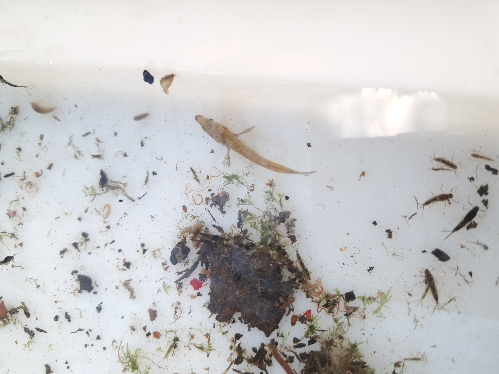

Photography
hello!
I am by no means a good photographer I don't even have a camera these are more about the cool find than the quality of the photos :)

14th March 2026
This is a photo of a female three-spined stickleback seen on my monthly riverfly monitoring. In spring the males belly turns red! It is a common fish and hunts invertebrates, tadpoles and small fish. They come in marine or freshwater varieties, with marine sticklebacks migrating to the sea in winter. They are still the same species (for now) but it seems like their morphological differences could lead to speciation down the line! Their ability to swap betweeen fresh and salt water is awesome! They have some level of phenotypic plasticity and have specialised cells which uptakes and excretes salt in marine environments and in freshwater they take up salt from the environment and excrete excess water to maintain osmotic presssure homeostatically; but some populations have evolved to be more able to respond to salinity stress than others.

22nd February 2026
This is a photo of a roosting bat found in Burdale Tunnel, Malton. I am still working on my visual bat identification but I beleive this is a myotis species. It is larger than a pipistrelle and has seperated ears. The ears don't have a flick which I'd associate with a Natterer's. Hopefully I can update this text soon with a more accurate ID :)